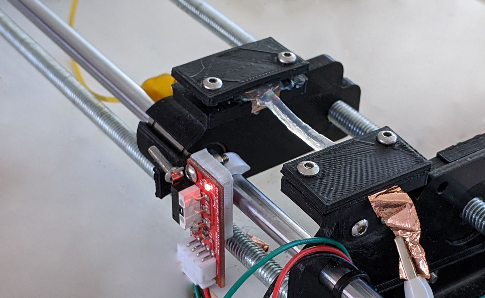

Cardiac Sensor
Development and testing of a bio-compatible elastic strain sensor for measuring cardiac implant contractions in vivo.
2020 - I worked under supervision of Dr Thomas Owen and Dr Sian Harding of the National Heart & Lung Institute and Dr Thrishantha Nanayakkara from the Dyson School of Design Engineering.

Background
The research team at the National Heart & Lung Institute are investigating the
transplantation of lab grown cardiac implants for regeneration after heart failure.
I was tasked to develop high sensitivity sensor solutions for measuring the contractions:
- 1. whilst implanted (in vivo)
- 2. in the lab (in vitro)
These undergo small displacements (< 5 mm) and small stresses (0.005 Pa > σ > 0.03 Pa).
This project took place during the COVID-19 lockdown in the UK, so I built the testing apparatus at home.
I developed and tested two different solutions and my preliminary research was used as part of a grant funding application, to enable the future development of this project.
Sensor Design
1. in vivo
A simple Alginate based Hydrogel was chosen for its elasticity, bio-compatibility and electrical properties.
Alginate hydrogel networks conduct electricity through the mobility of charged
ions. As the hydrogel is stretched, the charge pathways are limited and the resistance increases .

Alginate sensor resistance changes when stretched
The hydrogel was prepared by enclosing Sodium Alginate in a mould, between sheets of filter paper soaked in
Calcium Chloride crosslinker.
Mould Design
2. in vitro
A Hall effect sensor was chosen for its robustness and high sensitivity at low displacements.
Hall effect sensor and permenant magnet
Hall effect sensors measure the strength of a magnetic field. This has an inverse square relationship to distance, hence it can be
used to measure distance after calibration.
Test Rig
A test rig was built that achieves linear movement with a resolution of 5 µm using an Arduino, stepper motor and
threaded rod.
A carriage moves linearly, applying strain to samples. While the resistance changes are measured using a wheatstone bridge circuit
coupled with an operational amplifier with variable gain.
Test Rig

Stretching Alginate samples
Circuit Diagram | Rs is the sample being tested
Results | Hall Effect Sensor
The sensor showed high sensitivity with low displacements < 5mm.
In order to calibrate the sensor, a model had to be fit to the data. The curve was modelled using a variety of different fits which are shown in the table below.
A Rational model with 5 coefficients was selected.

Graph of Voltage vs Displacement with Rational model fit
Table of data fits and scores
Equation of rational 5 calibration curve
Repeat cycles of 2 mm displacement were performed. These show consistency up to 100 cycles.
100 cycles of loading Hall effct sensor

5 cycles of loading Hall effct sensor
Results | Alginate Sensor
The Alginate sample was loaded until failure. The sample fractured at around ε = 65%.
The Gauge Factor was measured to be 2.79.
Loading of Alginate
Repeat loading cycles were performed with 51x signal gain.
5 cycles of 3 mm (ε = 10%) showed a significant upwards creep in resistance. This suggests either
plastic deformation or slippage has occured.
Loading of Alginate
Conclusions
The Alginate sensor had high sensitivity (Gauge Factor of 2.79 is comparable to standard strain gauges).
However, the upwards creep in resistance upon repeat loading implies plastic deformation. Therefore,
solutions such as hybrid network hydrogel with enhanced toughness and elasticity should be considered.
The use of Hall effect sensor for in vitro measurements has the most im-
mediate potential, achieving sensitivity in the correct range. The sensitivity of the sensor was limited by
the resolution of the test rig and after calibration could measure displacements as low as 5 µm and theoretically
measure stresses as low as 20 Pa on cardiac tissue.